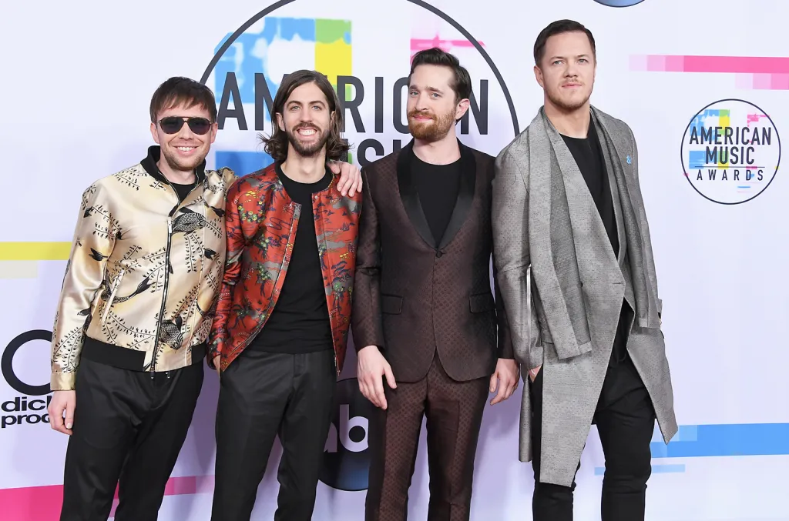
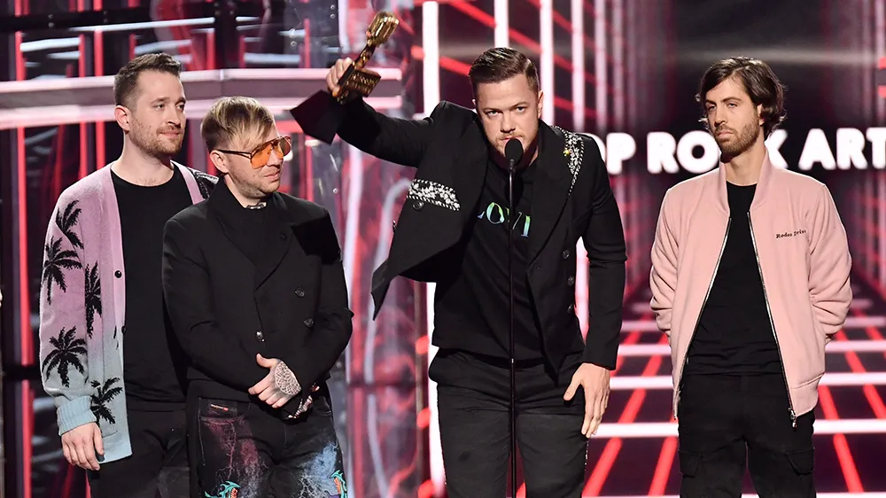
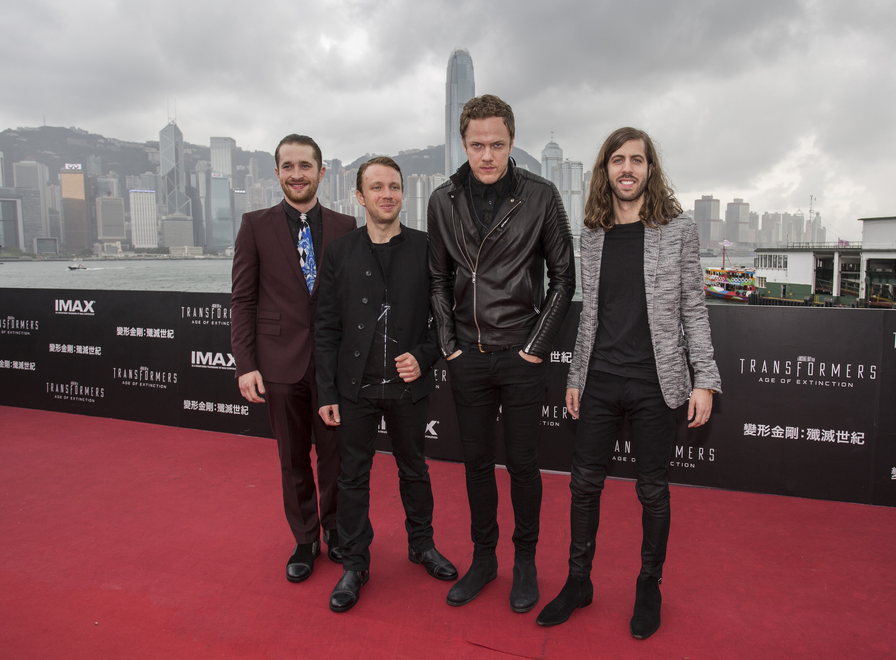
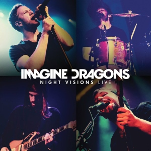
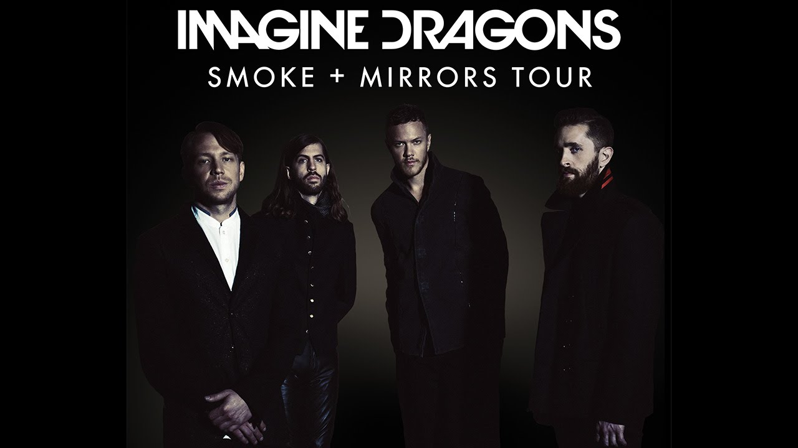
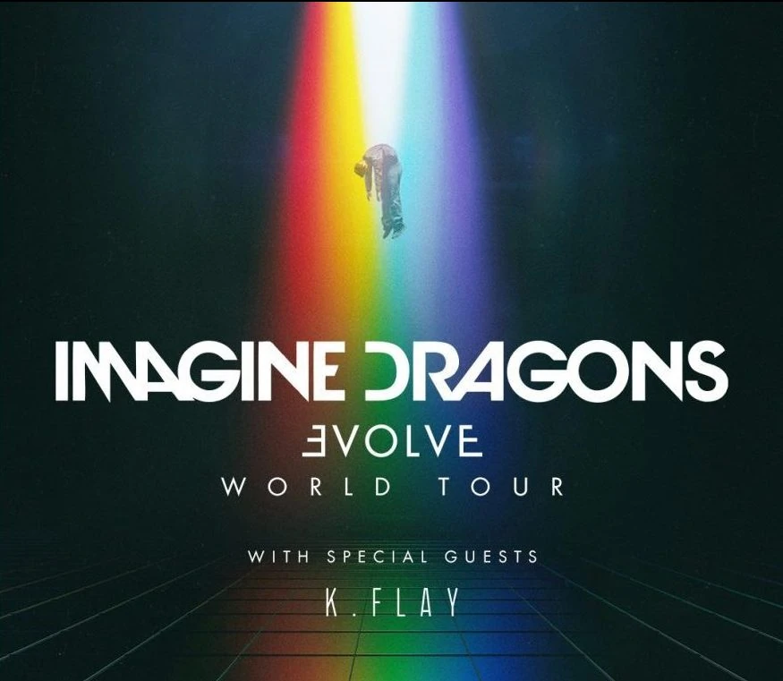

Giras & Premios
Descubre los conciertos y reconocimientos de Imagine Dragons
Premios y Reconocimientos

1. Grammy Awards (2014)
- Premio obtenido: Mejor Actuación de Rock
- Canción premiada: "Radioactive"
- Características:
- • Primer Grammy de la banda en su carrera.
- • "Radioactive" rompió récords de permanencia en las listas.
- • La canción estuvo 87 semanas en el Billboard Hot 100.
- • Impacto: Consolidó a Imagine Dragons como una fuerza dominante en el rock alternativo.
- • Curiosidad: Fue la canción más vendida de rock de la década de 2010.

2. American Music Awards (2013, 2017, 2018)
- Premio obtenido: Artista Alternativo Favorito
- Múltiples victorias: 3 años consecutivos
- Características:
- • Reconocimiento del público estadounidense.
- • Votación directa de los fans.
- • Actuaciones memorables en cada ceremonia.
- • Impacto: Demostró su conexión especial con la audiencia americana.
- • Curiosidad: Sus actuaciones en los AMA siempre incluyen efectos pirotécnicos espectaculares.

3. Billboard Music Awards (2014, 2018, 2019)
- Premios obtenidos: Mejor Artista de Rock y Canción de Rock del Año
- Canciones premiadas: "Radioactive", "Thunder", "Natural"
- Características:
- • Basado en rendimiento comercial y popularidad.
- • Dominaron las listas de rock alternativo.
- • Récords de streaming y ventas digitales.
- • Impacto: Estableció su dominio comercial en la industria musical.
- • Curiosidad: "Thunder" fue la canción de rock más reproducida en streaming en 2018.

4. Teen Choice Awards (2013, 2017, 2018, 2019)
- Premio obtenido: Mejor Grupo de Rock
- Múltiples victorias: 4 años de reconocimiento
- Características:
- • Favoritos absolutos de la audiencia joven.
- • Votación exclusiva de adolescentes.
- • Conexión especial con la Generación Z.
- • Impacto: Sus canciones se convirtieron en himnos generacionales.
- • Curiosidad: Dan Reynolds es muy activo en causas juveniles y LGBTQ+.
Las Mejores Giras de Imagine Dragons
2012-2014

Night Visions Tour
La gira que lo cambió todo
110+
Shows
4
Continentes
87
Semanas en Billboard
Primera gira mundial que consolidó a Imagine Dragons como fenómeno global. "Radioactive" se convirtió en himno generacional.
2015

Smoke + Mirrors Tour
Evolución sonora en vivo
3
Festivales Principales
1st
Sección Acústica
∞
Experimentación
Gira que demostró su versatilidad musical con elementos orquestales y experimentación sonora. Headliners en Coachella y Lollapalooza.
2017-2018

Evolve World Tour
El pináculo del éxito
3.5M
Asistentes
2.5h
Duración Shows
∞
Energía
La gira más exitosa de la banda con récords de asistencia. "Thunder" y "Believer" se convirtieron en himnos mundiales.